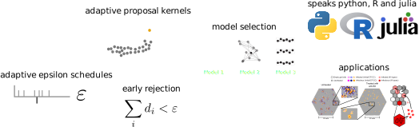
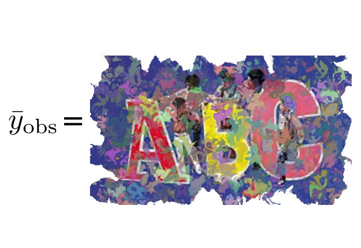

Why?
Model types
 based on Hasenauer et al., J. Coup. Sys. and Mult. Dyn.,
2015
based on Hasenauer et al., J. Coup. Sys. and Mult. Dyn.,
2015
Example: Tumor growth multi-scale model
based on Jagiella et al., Cell Systems 2017
- cells modeled as interacting stochastic agents, dynamics of extracellular substances by PDEs
- simulate up to 106 cells
- 10s - 1h for one forward simulation
What we tried |
|
Failed |
Worked |
|
What?
ABC
likelihood-free approximate Bayesian computation-
conflicting goals:
- reduce approximation error $\varepsilon$
- keep high acceptance rates
ABC-SMC
combine with a sequential Monte-Carlo scheme
ABC
- sample $\theta\sim g(\theta)$
- simulate data $y\sim\pi(y|\theta)$
- accept $\theta$ if $d(s(y), s(y_\text{obs}))\leq\varepsilon$
A "derivation"
Rejection sampling
- sample $\theta\sim g(\theta)$
- accept $\theta$ with probability $\propto \frac{f(\theta)}{g(\theta)}$
Let $f=\pi(\theta|y_\text{obs}), g=\pi(\theta) \Rightarrow \frac{\pi(\theta|y_\text{obs})}{\pi(\theta)} \propto \pi(y_\text{obs}|\theta)$
- not available
- idea: circumvent likelihood evaluation by simulating data and matching them to the observed data
Likelihood-free rejection sampling
- sample $\theta\sim \pi(\theta)$
- simulate data $y\sim\pi(y|\theta)$
- accept $\theta$ if $y=y_\text{obs}$
- Acceptance probability: $\mathbb{P}[y_\text{obs}]$
- can be small in particular for continuous data
- idea: accept simulations that are similar to $y_\text{obs}$
ABC-Rejection
- sample $\theta\sim \pi(\theta)$
- simulate data $y\sim\pi(y|\theta)$
- accept $\theta$ if $d(y, y_\text{obs})\leq\varepsilon$
- curse of dimensionality: if the data are too high-dimensional, the probability of simulating similar data sets is small
- idea: create an informative lower-dimensional representation via summary statistics
- ideally minimal sufficient statistics
Approximate Bayesian Posterior
We want: \[\pi(\theta|y_\text{obs}) \propto \color{red}{p(y_\text{obs}|\theta)}\pi(\theta)\]
We get: \[\pi_{ABC}(\theta|s(y_\text{obs})) \propto \color{red}{\int I(\{d(s(y), s(y_\text{obs})) \leq \varepsilon\})p(y|\theta)\operatorname{dy}}\pi(\theta) \approx \frac{1}{N} \sum_{i=1}^N\delta_{\theta^{(i)}}(\theta)\] with distance $d$, threshold $\varepsilon>0$, and summary statistics $s$
Sources of approximation errors in ABC
- model error (as for every model of reality)
- Monte-Carlo error (as for sampling in general)
- summary statistics
- epsilon threshold
Far better an approximate answer to the right question, which is often vague, than an exact answer to the wrong question, which can always be made precise.
How?
github.com/icb-dcm/pyabc
Klinger et al., Bioinformatics 2018 and Schälte et al., JOSS 2022
Easy to use
# define problem
abc = pyabc.ABCSMC(model, prior, distance)
# pass data
abc.new(database, observation)
# run it
abc.run()
Example: Tumor growth model
based on Jagiella et al., Cell Systems 2017Define summary statistics

- 400 cores
- 2 days
- 1.8e6 simulations


Uncertainty-aware predictions, easy data integration.
Algorithmic details
Parallel backends: 1 to 1,000s cores
Parallelization strategies
Klinger et al., CMSB Proceedings 2017
Adaptive population sizes
Klinger et al., CMSB Proceedings 2017 idea: adapt population size trying to match a target accuracy
idea: adapt population size trying to match a target accuracy
Self-tuning distance functions
based on Prangle, Bayesian Analysis 2015
Measurement noise
Schälte et al., Bioinformatics 2020How to efficiently account for measurement noise in ABC?

Robustness to outliers
Schälte et al., bioRxiv 2021
Assess data informativeness
based on Fearnhead and Prangle, RSS B 2012Schälte and Hasenauer, bioRxiv 2022

And ...
...
Joint initiative to perform inference for multi-cellular models
Morpheus toolbox: Staruß et al., Bioinformatics 2014
Efficient exact ABC with noise
The problem: (biological) data are noisy
What happens when ignoring noise in ABC?
Assume: Model $y\sim \pi(y|\theta)$ does not account for noise.
But: Measurements are noisy, $\bar y_\text{obs} \sim \pi(\bar y|y,\theta)$.

How to account for noise?


“ABC gives exact inference for the wrong model”
Richard Wilkinson, Stat. App. Gen. Mol. Bio. 2013
- noise model permits exact likelihood-free inference
- applicable to any stochastic model and noise model
- parameterized noise model
Problem: Existing methods do not scale in practice


Can we make it more efficient?
-
How to propose parameters?
$\rightsquigarrow$ integrate in SMC via tempering, $\pi(\bar y_\text{obs}|y,\theta)^{\color{red}{1/T_t}}$. -
How to choose the normalization $c$?
$\rightsquigarrow$ based on previous samples, and avoid decapitation via reweighting $\tilde w := \color{red}{\frac{\left(\frac{\pi(\bar y_\text{obs}|y,\theta)}{c_t}\right)^{1/T_t}}{\min\left[\frac{\pi(\bar y_\text{obs}|y,\theta)}{c_t},1\right]^{1/T_t}}}\cdot\frac{\pi(\theta)}{g_t(\theta)}$ -
How to choose the temperatures $T_t$, $t=1,\ldots,n_t$?
$\rightsquigarrow$ predict the acceptance rate $\gamma = \int\left(\int\min\left[\left(\frac{\pi(\bar y_\text{obs} |y,\theta)}{c_{t}}\right)^{1/T},1\right]\pi(y|\theta)\mathop{dy}\right)g_{t}(\theta)\mathop{d\theta}$
(esp. allows choosing $T_1$)

Evaluation

- Applicable to various model and noise model types
- orders of magnitude speed-up
- scales to challenging application problems
Robust and efficient ABC via inverse machine learning models
The problem:
Fitting heterogeneous data

How to account for data informativeness?

- construct low-dimensional summary statistics (see Fearnhead & Prangle, JRSS 2012)
- or: define sensitivity weights via the sensitivity matrix $S = \nabla_{\bar y} s(\bar y_\text{obs})$, $q_{i_y} = \sum_{i_\theta=1}^{n_\theta} \frac{\left|S_{i_yi_\theta}\right|}{ \sum_{j_y=1}^{n_y}\left|S_{j_yi_\theta}\right|}$
- combine with scale normalization and outlier correction via adaptive weighting in an SMC framework
- learn functions of parameters $\lambda(\theta)$ to capture higher-order moments
Evaluation: Simple test model

- only combination of scale normalization, informativeness assessment, and regression target augmentation permits accurate inference
- sensitivity weights give further insights
Evaluation: Agent-based tumor spheroid model 

- can via sensitivity weighting in complex application simultaneously account for informativeness and outliers
Live demo

Summary
Summary
- parameter estimation when we cannot evaluate the likelihood is challenging
- ABC allows for reliable statistical inference
- pyABC provides an easy-to-use framework